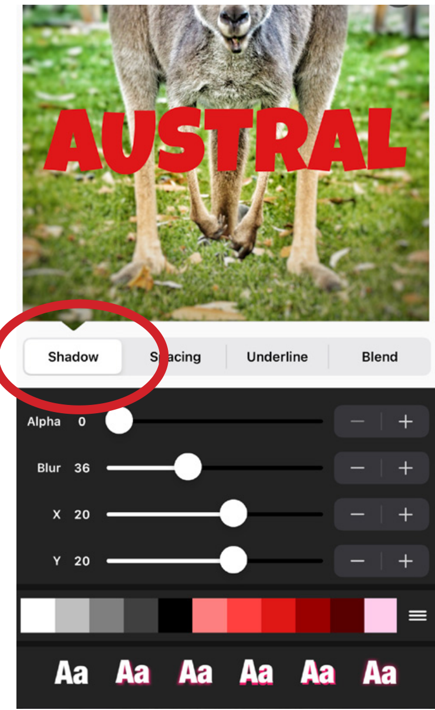

期末读书分享卡三张速成，Phonto 让我扔掉了电脑
期末最后一周，要交三张读书分享的图文作业，手机相册里一堆笔记照片等着加字，试了三个加字 App 全不行，最后 Phonto 救了场。
周三晚上十点，三张图等着加字
期末最后一周，社会学导论的老师突然在群里艾特所有人——下周三之前交三篇读书札记，每篇配一张图文卡，要求"有质感、能发朋友圈的水平"。
我翻了下手机相册，上周在图书馆拍了七八张自己手写笔记的照片，字是挺整齐的，但光秃秃一张白纸黑字发出去确实寒酸。得加点东西——书名、一句摘抄、自己的感想，排版好看点。
先下了个某图秀秀，打开加字功能，选字体——内置的十来个全是那种微信表情包风格的圆体，做海报还行，放在读书笔记照片上显得特别幼稚。换了个专门的加字 App，字库倒是多了，但选好字体之后调位置像在跟触屏较劲，拖动一下能飘半屏幕，好不容易对齐了，导出模糊得能看见像素点。
十点半，我坐在图书馆的椅子上，电脑搁在书包里懒得掏——期末周那个环境，打开电脑就意味着又要开浏览器刷半小时。就用手机解决。
室友的推荐和我搜到的 Phonto
室友斜对面坐着，我把手机扔给她看截图："你平时发小红书用什么加字？"
她瞄了一眼我那半吊子排版："Phonto官网 啊，专业的图片加字工具，专门给手机设计的，不像那种什么都想做一点的大杂烩。"
我在手机商店搜了下 Phonto，图标挺朴素的——白底加一个大大的 P，看评分是四点六，评价里有人说"用了三年了"。安装包从官方下载拿了一份，装完打开的第一反应是：这界面真干净。没有广告条，没有引导弹窗，直接就是一个"从相册选图"的按钮。
动手的过程：从乱到整的半小时
打开那张拍了《规训与惩罚》笔记的照片——A4 纸，左边是福柯的原话摘录，右边是我自己画的思维导图。我打算在照片顶部加个书名，中间压一句摘抄，底部放自己的三行感想。
第一步：字体，装自己的
点底部那个「添加文字」的按钮，弹出字体选择器。内置字体库有四百多个，但我一眼就看到顶部还有个「我的字体」标签——室友没骗我，这个 App 真让你自己装字体。
我想起前阵子在知乎存了一个免费字体包，里面有个思源宋体，适合做读书笔记那种沉静的感觉。导出 ttf 文件到手机，Phonto 点 Install 一下就好了，字体列表里立刻出现了。去Phonto文档翻了一下才知道 My Fonts 和内置字体库是分开的，App 升级不会弄丢你自己装的字体，但卸载重装会——这倒是个要注意的点。
第二步：阴影和描边的度
正文第一句摘抄——"监狱不再是对肉体的惩罚，而是对灵魂的规训"——选了思源宋体，字号拉到七十二。但字压在黑白的笔记照片上，中间那段线条正好穿过字的下半部分，看起来糊成一团。
底部工具栏滑到 Style，找到 Shadow 标签。这里跟之前用的 App 不一样——不是只有一个调透明度的滑块，而是四个独立参数：颜色、X 方向、Y 方向、模糊度。X 负一点往左偏，Y 正一点往下，模糊度拉到三十左右，阴影边缘变得柔和，透明度七成。瞬间字从背景里"浮"起来了。
后来看了下才发现，阴影和描边是互补的。小字号不要用描边，改用柔和阴影更自然；大标题才适合硬阴影加重描边。我那三行感想字号小，直接换成了柔和投影，效果确实比描边好。

第三步：图层，调完就锁
三张图一起做的，每张都有四五段文字元素——书名、副标题、摘抄、感想、签名。一开始没管图层，拖副标题的时候老是碰到上面的书名，想调位置又得重新选中。
底部工具栏滑到最右边的图层图标，点开之后所有元素列得清清楚楚。每段文字都是独立的一层，眼睛图标控制显隐，锁图标控制能不能拖动。调完书名的位置，直接点锁图标——这下它在画布上纹丝不动了，下面随便怎么碰都不会带歪。
室友说的没错，图层管理真的是复杂排版不乱动的关键。背景图永远放最底，文字永远在上，调完一个锁一个——等我做完导出的时候，从头到尾没出过定位错乱。
Change Theme：最后十秒的救场
三张图做到最后一张，总觉得差点意思——读书笔记太干了，需要点整体氛围。左下角三横线菜单里藏了个 Change Theme，点开来有配色方案、滤镜和整体图形感三个选项。
配色方案里选了一套暖米色的，Phonto 自动把画布上所有文字的颜色换成了协调的暖色调，不用我一个个手动改。底图加了个轻微的复古滤镜，颗粒感往上拉了一点，暗角开了一点点——整张图瞬间从"期末作业"变成了"能发朋友圈"。
后来查了下，Change Theme 还有两百多种蒙版，可以把图片或文字套成心形、圆形、不规则形状，下次做情侣图或者头像的时候可以试试。
半小时后，三张图全部搞定
十点五十七，我把三张导出的图依次发给室友和微信文件传输助手。
室友回了个"可以啊"，又补了句："你看，专业的事交给专业的 App，别什么都想让图秀秀干。"
我翻了下手机，Phonto 从下载到导出三张图，前后用了不到四十分钟。字体自己装的，阴影调了两次，图层锁了五处，最后套了个主题配色——每一步都是这个 App 本身该做的事，没有多余的功能，没有碍事的广告，也没有让我掏出电脑。
说实话之前对手机端加字 App 没什么好感，总觉得做设计还是得靠电脑加 Photoshop 或者 Illustrator。但期末周这种场景——不想开电脑、需求不复杂但又要好看、操作要快——Phonto 这种把一件事做透的工具，比全家桶式的大杂烩实用得多。
那天之后我手机里多了个 Phonto，图秀秀删了。不是说图秀秀不好，而是我用不上那么多功能，只想加字加好看的字。
资料在哪
整理这份笔记的时候，顺手去翻了一下 Phonto 的资料集合，文档维护得挺细的，字体管理、阴影控制、图层锁定、主题滤镜每一块都有独立的说明页面，按需查就行。GitHub 上是这套资料的主仓库，国内网络访问慢的话，Gitee 和 GitCode 也同步了一份镜像，按需取用就行。